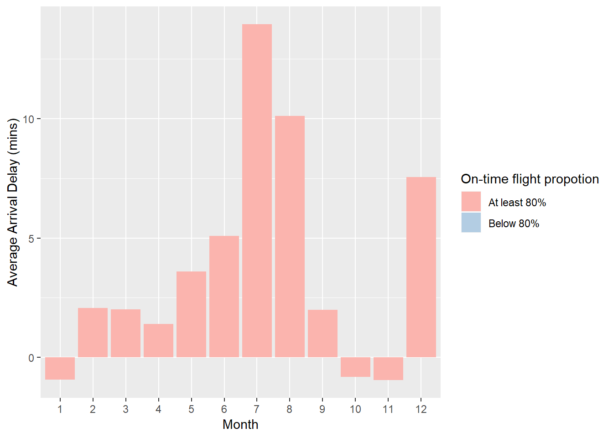
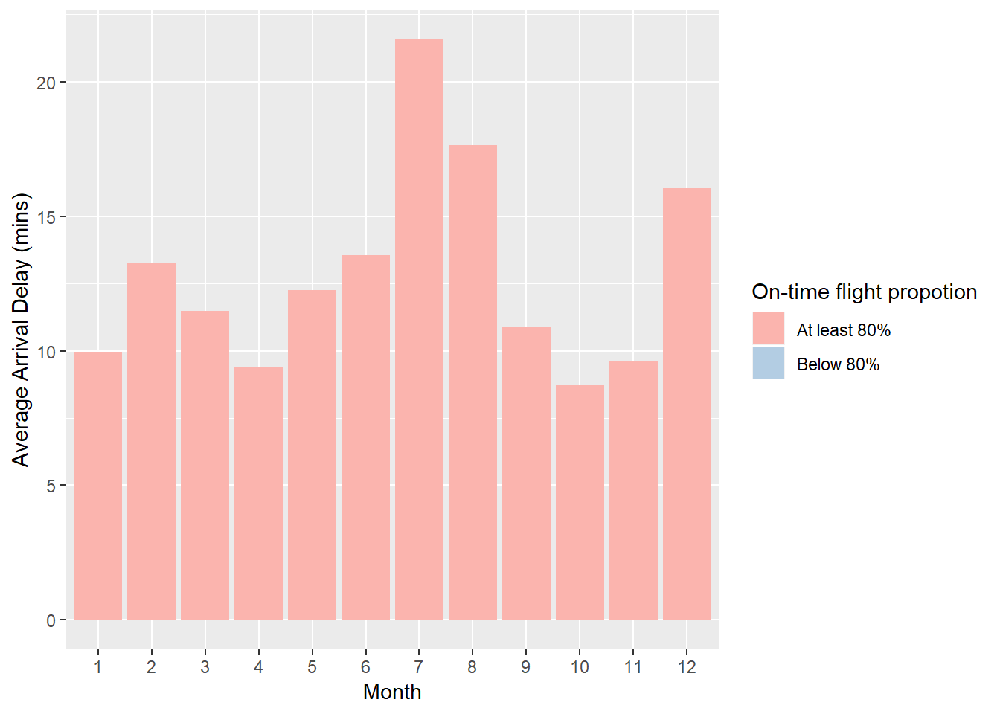
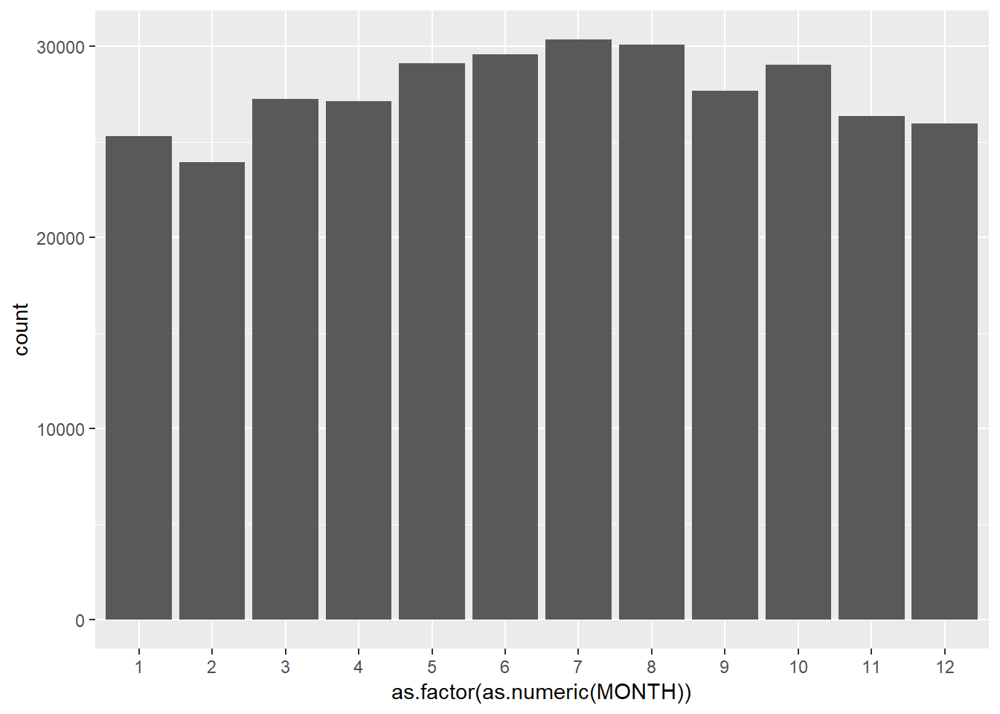
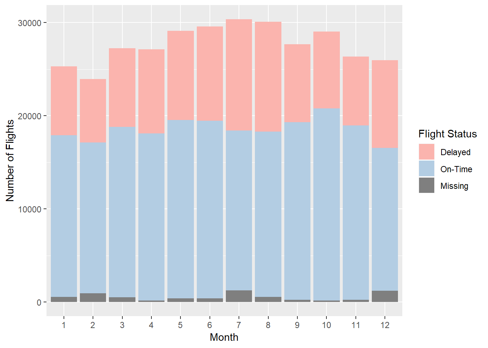
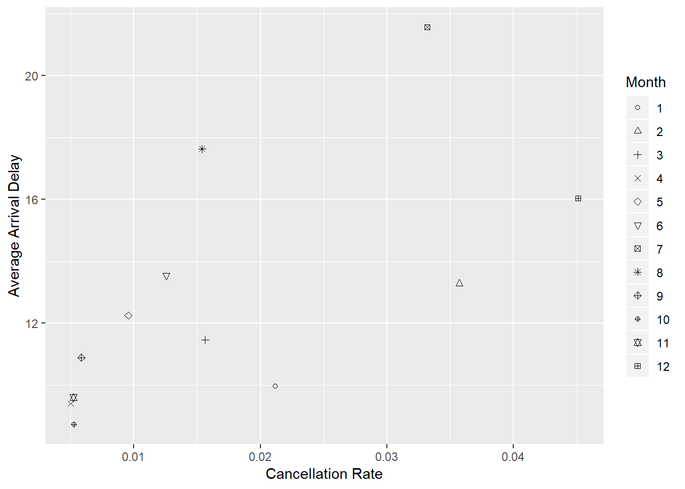
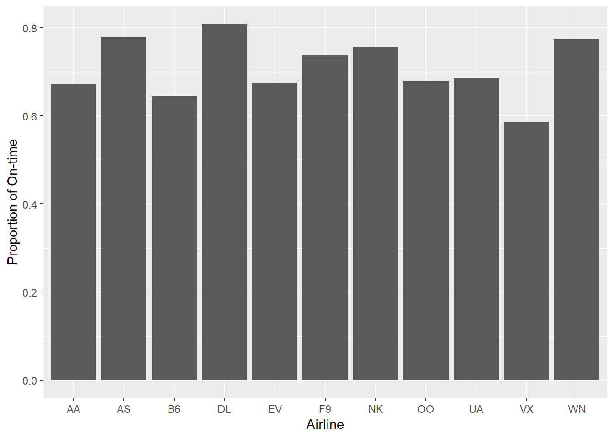
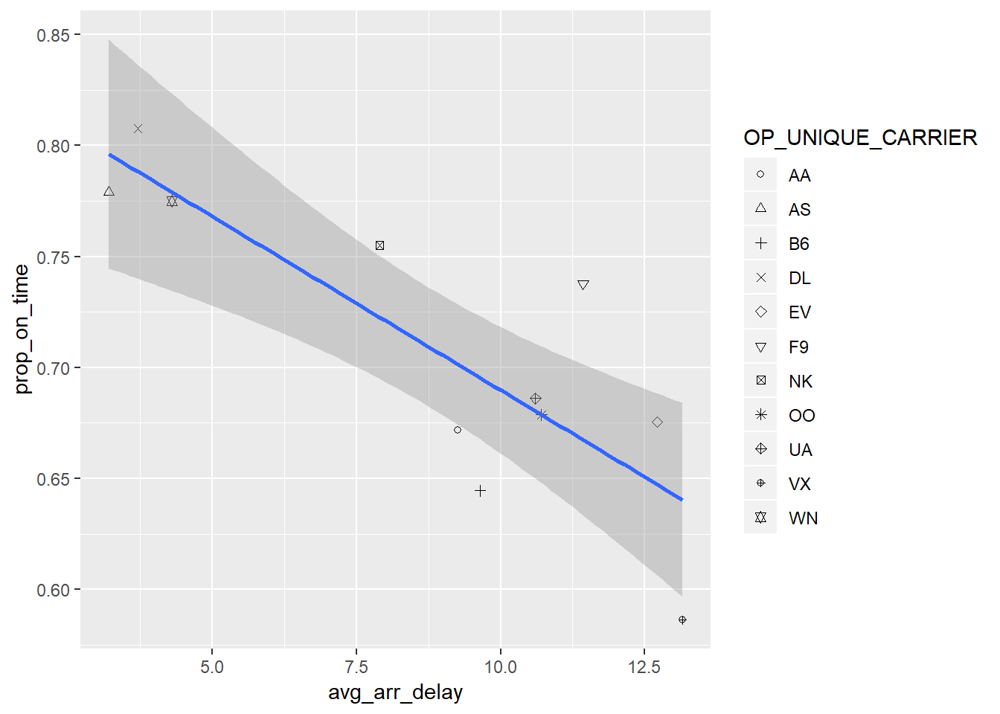
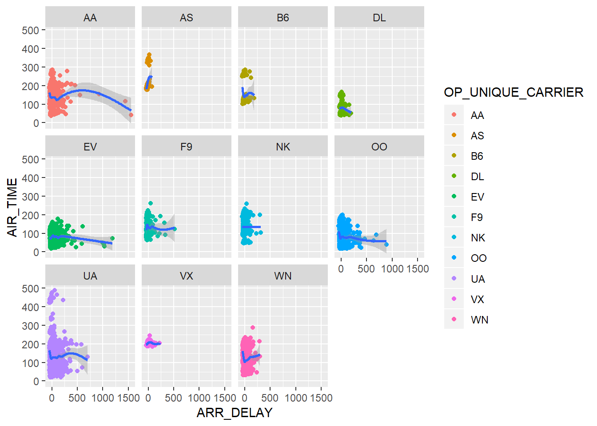
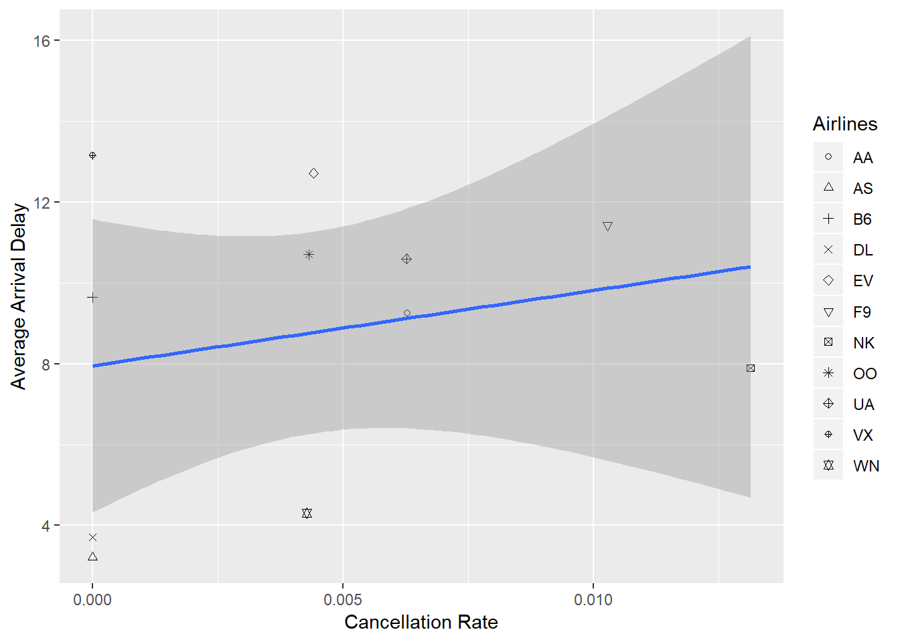
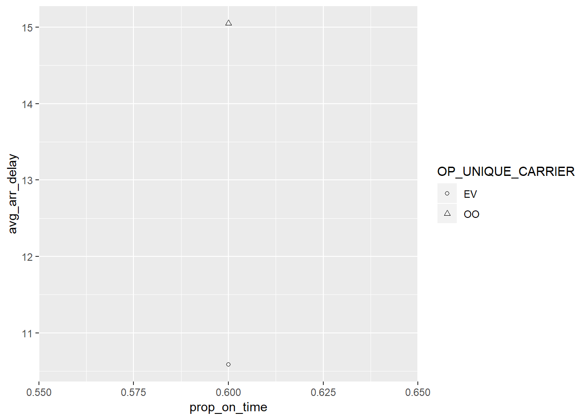

Front matter
This submission is my work alone and complies with the 30531 integrity policy.
Add your initials to indicate your agreement: YHP ZZ
# LOAD LIBRARIES HERE
library(tidyverse)An international trade organization is hosting a two-day convention in Chicago in 2019. The mayor’s tourism office has asked for some planning help based on historical data from 2016. Use the same data which you analyzed for PS2. Limit the sample to flights to Midway and O’Hare.
For each question, please follow the four-part approach laid out in lecture. I have given you the question (step 1). You should write out your query (step 2), show the plot from this query (step 3), and write out the answer to the question in a sentence (step 4).
# Load the data
file_list <- list.files(pattern = ".csv", recursive = TRUE)
df_list <- lapply(file_list, read_csv)## Warning: Missing column names filled in: 'X26' [26]
## Warning: Missing column names filled in: 'X26' [26]
## Warning: Missing column names filled in: 'X26' [26]
## Warning: Missing column names filled in: 'X26' [26]
## Warning: Missing column names filled in: 'X26' [26]
## Warning: Missing column names filled in: 'X26' [26]
## Warning: Missing column names filled in: 'X26' [26]
## Warning: Missing column names filled in: 'X26' [26]
## Warning: Missing column names filled in: 'X26' [26]
## Warning: Missing column names filled in: 'X26' [26]
## Warning: Missing column names filled in: 'X26' [26]
## Warning: Missing column names filled in: 'X26' [26]chi.flights <- bind_rows(df_list)
# Subset to MDW and ORD
chi.flights <-
chi.flights %>%
filter(DEST == "MDW" | DEST == "ORD")## The average delay was calculated based on non-negative values.
month_arr_delay <-
chi.flights %>%
group_by(MONTH) %>%
summarize(
month_avg_delay = mean(ARR_DELAY, na.rm = TRUE),
prop_on_time = mean(ARR_DELAY <= 0, na.rm = TRUE),
on_time = factor(prop_on_time >= 0.8, levels = c(FALSE, TRUE))
)
non_negative_arr_delay <-
chi.flights %>%
mutate(ARR_DELAY = ifelse(ARR_DELAY <= 0, 0, ARR_DELAY)) %>%
group_by(MONTH) %>%
summarise(
month_avg_delay = mean(ARR_DELAY, na.rm = TRUE),
prop_on_time = mean(ARR_DELAY == 0, na.rm = TRUE),
on_time = factor(prop_on_time >= 0.8, levels = c(FALSE, TRUE))
)
ggplot(month_arr_delay) +
geom_col(aes(x = as.factor(as.numeric(MONTH)),
y = month_avg_delay,
fill = on_time)) +
labs(x = "Month",
y = "Average Arrival Delay (mins)",
fill = "On-time flight propotion") +
scale_fill_manual(labels = c("At least 80%", "Below 80%"),
values = c("#fbb4ae", "#b3cde3"),
drop = FALSE) 
ggplot(non_negative_arr_delay) +
geom_col(aes(x = as.factor(as.numeric(MONTH)),
y = month_avg_delay,
fill = on_time)) +
labs(x = "Month",
y = "Average Arrival Delay (mins)",
fill = "On-time flight propotion") +
scale_fill_manual(labels = c("At least 80%", "Below 80%"),
values = c("#fbb4ae", "#b3cde3"),
drop = FALSE)
Answer: If we count negative delays, November has the lowest average delay, and every month has less than 80% of flights on-time. If we only count non-negative delays, October has the lowest average delay, and every month has less than 80% of flights on-time.
ggplot(chi.flights) +
geom_bar(aes(x = as.factor(as.numeric(MONTH))))
Answer: July has the most common flights to Chicago.
chi.flights %>%
mutate(on_time = ifelse(ARR_DELAY <= 0, "on-time", "delayed")) %>%
ggplot() +
geom_bar(aes(x = as.factor(as.numeric(MONTH)),
y = ..count..,
fill = on_time,
group = on_time)) +
labs(x = "Month",
y = "Number of Flights",
fill = "Flight Status") +
scale_fill_manual(labels = c("Delayed", "On-Time", "Missing"),
values = c("#fbb4ae", "#b3cde3"),
na.value = "grey50")
Answer: We would recommend that they have the convention in October because while October has a relatively high number of flights as well as the high on-time ratio, as shown in the graph above. To be specific, all months that have higher number of flights have lower on-time rate while all months less than October seem to have similar or lower on=time rates. Therefore, October seems to be the best month to satisfy both the international trade organization and attendees.
chi.flights %>%
group_by(MONTH) %>%
mutate(
non_neg_arr_delay = ifelse(ARR_DELAY <= 0, 0, ARR_DELAY),
on_time = ifelse(ARR_DELAY <= 0, "on-time", "delayed")
) %>%
summarise(
rate_cancelled = sum(is.na(DEP_DELAY)) / n(),
avg_arr_delay = mean(non_neg_arr_delay, na.rm = TRUE)
) %>%
ggplot(aes(x = rate_cancelled,
y = avg_arr_delay,
shape = as.factor(as.numeric(MONTH)))) +
geom_point() +
labs(x = "Cancellation Rate",
y = "Average Arrival Delay",
shape = "Month") +
scale_shape_manual(values = 1:12) 
Answer: The plot above generates the specific details of the number of flights.
Answer: For further information to choose the optimal date for the convention, it is also necessary to analyze the weather variables such as the “Average Temperature,” “Precipitation,” etc. (The data set is available at National Weather Service Forecast Office (https://w2.weather.gov/climate/xmacis.php?wfo=lot). Also, for the security issue, it would be also beneficial to consider the number of crimes near the convention place by subsetting the data with “Date,” “Primary Type,” and “Community Area.” The crime dataset is available at the City of Chicago Data Portal(https://data.cityofchicago.org/Public-Safety/Crimes-2001-to-present/ijzp-q8t2).
# Simple Plot (On-time rate by airline)
chi.flights %>%
filter(MONTH == 10) %>%
group_by(OP_UNIQUE_CARRIER) %>%
summarise(prop_on_time = sum(ARR_DELAY <= 0, na.rm = TRUE) / n()) %>%
ggplot() +
geom_col(aes(x = OP_UNIQUE_CARRIER,
y = prop_on_time)) +
labs(x = "Airline",
y = "Proportion of On-time") 
## Sophisticated Plot (Yoon: I would like to go with the last one.)
chi.flights %>%
filter(MONTH == 10) %>%
mutate(non_neg_arr_delay = ifelse(ARR_DELAY <= 0, 0, ARR_DELAY)) %>%
group_by(OP_UNIQUE_CARRIER) %>%
summarise(
avg_arr_delay = mean(non_neg_arr_delay, na.rm = TRUE),
prop_on_time = sum(ARR_DELAY <= 0, na.rm = TRUE) / n()
) %>%
ggplot(aes(x = avg_arr_delay,
y = prop_on_time)) +
geom_point(aes(shape = OP_UNIQUE_CARRIER)) +
geom_smooth(method = "lm") +
scale_shape_manual(values=1:11) 
chi.flights %>%
filter(MONTH == 10) %>%
mutate(non_neg_arr_delay = ifelse(ARR_DELAY <= 0, 0, ARR_DELAY)) %>%
group_by(OP_UNIQUE_CARRIER) %>%
ggplot(aes(x = ARR_DELAY,
y = AIR_TIME)) +
geom_point(aes(color = OP_UNIQUE_CARRIER)) +
geom_smooth() +
facet_wrap(vars(OP_UNIQUE_CARRIER))## `geom_smooth()` using method = 'gam' and formula 'y ~ s(x, bs = "cs")'## Warning: Removed 181 rows containing non-finite values (stat_smooth).## Warning: Removed 181 rows containing missing values (geom_point).
chi.flights %>%
filter(MONTH == 10) %>%
mutate(non_neg_arr_delay = ifelse(ARR_DELAY <= 0, 0, ARR_DELAY)) %>%
group_by(OP_UNIQUE_CARRIER) %>%
summarise(
avg_arr_delay = mean(non_neg_arr_delay, na.rm = TRUE),
rate_cancelled = sum(is.na(DEP_DELAY)) / n(),
prop_on_time = sum(ARR_DELAY <= 0, na.rm = TRUE) / n()
) %>%
ggplot(aes(x = rate_cancelled,
y = avg_arr_delay)) +
geom_point(aes(shape = OP_UNIQUE_CARRIER)) +
geom_smooth(method = "lm") +
scale_shape_manual(values = 1:11) +
labs(x = "Cancellation Rate",
y = "Average Arrival Delay",
shape = "Airlines")
Answer: Based on our earlier recommendation for the month of convention, which is October, Delta Airline is recommended. First of all, Delta has the highest on-time rate among all carriers, as shown in the basic plot. Also, the sophisticated plot confirms that Delta has the lowest cancellation rate as well as relativley lower average arrival delays than other carriers. Though Alaska Airlines shows slighlty lower arrival delays, such a difference is negligible. Also, the on-time rate is slightly more important than average delays.(If you are more likely to be on time, then you would not need to care about the amount of delays.) Therefore, Delta Airline is recommended.
chi.flights %>%
filter(MONTH == 10, ORIGIN == "GSP") %>%
mutate(non_neg_arr_delay = ifelse(ARR_DELAY <= 0, 0, ARR_DELAY)) %>%
group_by(OP_UNIQUE_CARRIER) %>%
summarise(
avg_arr_delay = mean(non_neg_arr_delay, na.rm = TRUE),
rate_cancelled = sum(is.na(DEP_DELAY)) / n(),
prop_on_time = sum(ARR_DELAY <= 0, na.rm = TRUE) / n()
) %>%
ggplot(aes(x = prop_on_time,
y = avg_arr_delay)) +
geom_point(aes(shape = OP_UNIQUE_CARRIER)) +
geom_smooth(method = "lm") +
scale_shape_manual(values = 1:11) 
unique(chi.flights[chi.flights$ORIGIN == "GSP",]$OP_UNIQUE_CARRIER)## [1] "OO" "WN" "EV"unique(chi.flights[chi.flights$OP_UNIQUE_CARRIER == "WN" & chi.flights$ORIGIN =="GSP",]$MONTH)## [1] 2 3 4 1Answer: Yes, our recommendation is changed. Those important figures should use Greenville-Spartanburg International Airport where only three carriers are operated between this airport and Chicago. However, only two out of the three carriers operate in October, Skywest and ExpressJet. Between the two having almost same on-time rates, ExpressJet shows less avg_arr_delay than Skywest, but to consider the overall quality of airlines shown in 2.2.1. even ExpressJet cannot be recommended for all the other attendees. The carrier not operating in October is Southwest, which seems to be relatively less operates only from January to April. Based on the graphs from 1.2.3. a) and b), April seems to have the lowest cancellation rate, relatively higher on-time rate, and smaller average arrival delays among those four months, so April will be recommended.